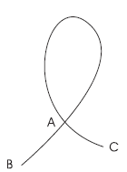
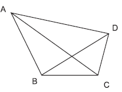

Examples :
1) Find the number of nodes, arcs and regions in the following networks.
Solution : In this graph, A, B, C, D and E are nodes.
AB, BC, CD, DE, AE and AC are arcs.

The regions are, the area within ABC, area
within ACDE and the area outside ABDE.
The number of nodes = N = 5
The number of arcs = A = 6
The number of regions = R = 3
2) Find N, A and R of the following graph

In the network nodes are A, B, C and D
The Arcs are 1, 2, 3, 4, 5 and 6
The regions are a, b, c and d.
The number of nodes = N = 4
The number of Arcs = A = 6
The number of regions = R = 4
3) Find the number of nodes and arcs in the graph given below
Solution : The nodes are A, B and C. The arcs are AB, AC and the arc joining A to A.
∴ The number of nodes = N = 3 The number of arcs = A = 3.
4) Four friends meet in a party and shake their hands mutually. Draw a graph. Write the number of nodes and arcs in it.
Let A, B, C and D be four friends. The line segments joining A, B, C and D represent the mutual handshakes.
Here the nodes are A, B, C and D and the arcs are AB, BC, CD, DA, AC and BD
∴N = 4 and A = 6
Note : In the figure, The point of intersection of AC and BD is not taken as a node because A shakes hand with C and B shakes hand with D and it is represented by arcs AC and BD.